León
Cultura
El arte en la provincia de León abarca todas las manifestaciones artísticas realizadas desde la Edad del Bronce (hace 4000 años), momento al que pertenecen los petroglifos hallados en 2008 en Maragatería, hasta la actualidad. De época prerromana son varios los yacimientos o castros localizados, destacando, entre otros, los de Chano y Bergidum. Con la conquista romana el territorio se romanizó, siendo visible tanto en los restos de ciudades como Lancia, Asturica Augusta o Legio, como en las obras públicas de Las Médulas (declarado Patrimonio de la Humanidad) o los canales de La Cabrera. Con la crisis del Imperio, el poblamiento se ruraliza, contando en la provincia con los ejemplos de Navatejera y Los Villares, a la vez que el cristianismo ofrece sus primeras muestras en la iglesia de Marialba de la Ribera, del siglo IV. A mediados del medievo, en el siglo X, el arte mozárabe dejará huella en ejemplos como los de Santiago de Peñalba, San Miguel de Escalada y Santo Tomás de las Ollas. Por su parte, el mudéjar tiene especial protagonismo en Sahagún, donde se levantan la iglesia de San Lorenzo, la iglesia de San Tirso y el Santuario de la Peregrina.
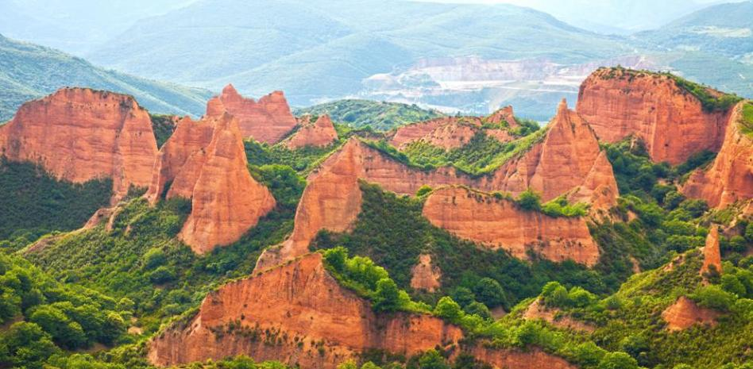Desde el primer tercio del siglo XI, las formas arquitectónicas del románico penetraron a través del Camino de Santiago, que recorre la provincia de este a oeste, contando con diversos ejemplos de arquitectura religiosa. Así está la Basílica de San Isidoro de León, en la cual se encuentra el Panteón de reyes, considerado una de las cumbres del románico español, la iglesia de San Salvador en Destriana, la iglesia de Santiago en Villafranca del Bierzo, la iglesia de San Miguel en Corullón o la Colegiata de Santa María de Arbas, en uno de los ramales de la ruta jacobea. Asimismo, la corona potenció, a través de distintas órdenes, la creación de monasterios como San Benito en Sahagún, San Miguel de las Dueñas, Monasterio de Santa María de Gradefes o Santa María de Sandoval. La presencia del gótico también es destacada, con muestras como el Monasterio de Santa María de Carracedo y la Catedral de Astorga (aunque con reformas posteriores), pero especialmente la Catedral de León (siglos XIII-XIV), que presenta un diseño del más depurado estilo gótico francés y es considerada una de las mejores muestras del gótico español, destacando su conjunto de vidrieras.
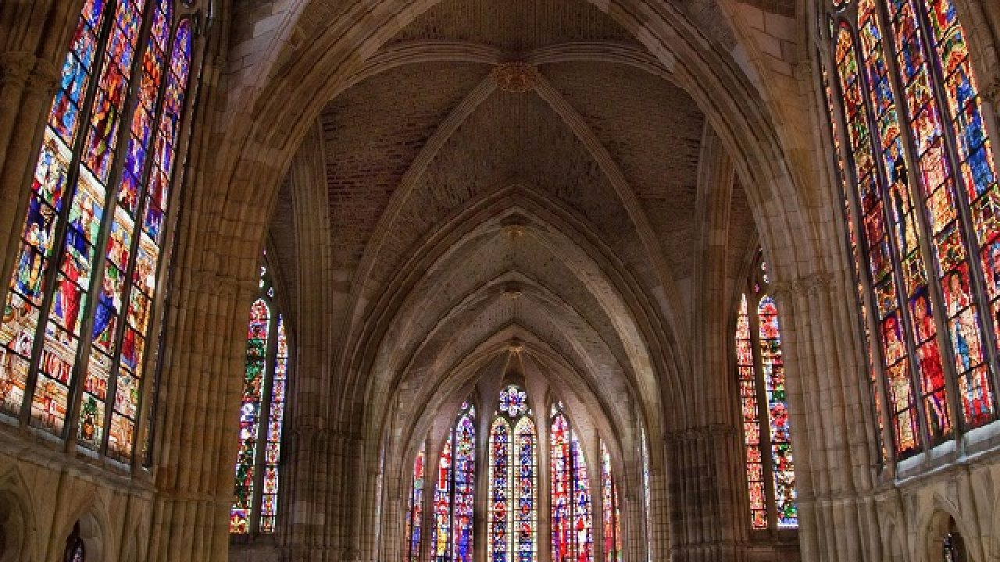La diversidad cultural de las distintas comarcas leonesas propicia unos festejos caracterizados por su gran variedad de formas, ceremonias, bailes y atuendos, aunque todos ellos con un sustrato histórico y cultural común. Es frecuente que, bajo celebraciones cristianas, aparezcan costumbres paganas y así, por ejemplo, santuarios y ermitas se levantan sobre lugares sagrados de origen pagano. Por otra parte, debido al carácter agrícola de la provincia, son los ritmos agrarios los que marcaron el calendario festivo, encuadrándose en ellos las distintas celebraciones cristianas. En todas ellas, los dos elementos más tradicionales son el pendón y el ramo.
Ampliamente arraigada por toda la provincia, y de la que forman parte costumbres como matar judíos o jugar a las chapas, la celebración de la Semana Santa tiene su punto neurálgico en la capital provincial. En ella, miles de papones (cofrades), pertenecientes a 16 cofradías y hermandades, recorren las calles de la ciudad a lo largo de diez días. Entre sus momentos más significativos están la Ronda y la Procesión de los Pasos, ambos el Viernes Santo, que recibieron mención especial en su declaración como Fiesta de Interés Turístico Internacional en 2002. Asimismo, la noche del Jueves Santo tiene lugar el Entierro de Genarín, celebración pagana en honor de un pellejero de León atropellado en 1929 mientras hacía sus necesidades en la base de la muralla, lugar donde año tras año recibe homenaje, habiéndose convertido en los últimos años en una de los eventos más multitudinarios de la Semana Santa.

Volver al inicio
Geografía
Desde el punto de vista estructural, el relieve de la provincia se organiza en torno a tres grandes unidades morfológicas: la cordillera Cantábrica, el macizo Galaico-Leonés y la Meseta. Las formaciones montañosas ocupan una parte importante del relieve, estando más del 50 % de la superficie total por encima de los 1000 metros de altitud.
Cordillera Cantábrica
La cordillera Cantábrica está representada por el llamado macizo Asturiano. De entre todo el conjunto destacan los Picos de Europa, donde los contrastes topográficos resultado de la orogenia hercínico-alpina se han visto acentuados por el encajonamiento de la red fluvial (con profundas hoces como el desfiladero de Los Beyos y la garganta del Cares), y donde encontramos cumbres que pasan de los 2500 m de altitud como Torre de Cerredo (2648 m) o Torre del Llambrión (2642 m). Las formas verticales, los circos glaciares, los complejos kársticos, las gargantas, los neveros, los, las dolinas y las simas son los elementos más significativos.
En la zona occidental, las alineaciones se disponen de oeste a este, dejando corredores fluviales que, en el caso de los ríos Luna y Omaña, abrieron las depresiones que conforman las comarcas de Babia y Omaña. En el sector central, distintos cursos de agua abrieron valles transversales de disposición norte-sur, llegando a formar en algunas ocasiones gargantas como las Hoces de Vegacervera o las Hoces de Valdeteja. El modelado glaciar y el modelado kárstico dejaron su impronta con formaciones como la cueva de Valporquero.
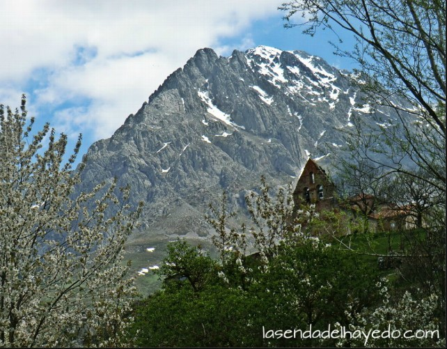Macizo Galaico-Leonés
Los montes galaico-leoneses cierran a la provincia por el oeste, separándola de Galicia. Constituyen un abombamiento del antiguo macizo paleozoico que se fracturó en distintas unidades: la sierra de Gistredo, con el pico Catoute (2117 m), los Montes de León, con el Teleno (2188 m), La Cabrera, con el Vizcodillo (2121 m), y las montañas occidentales como los Ancares, con el Cuiña (1992 m), y el Caurel, con el Montouto (1541 m). En el centro de todas ellas se formó la hoya del Bierzo caracterizada por un paisaje de campiñas y vegas. Las cumbres son aplanadas, interrumpidas por alineaciones de crestones de cuarcitas (picones, altos, peñas), y las formas glaciares se manifiestan con ejemplos de valles en U o con lagos como los de Truchillas y La Baña.

La Meseta
El sector leonés de la Meseta ocupa la parte central y sureste de la provincia siendo el extremo noroeste de la cuenca sedimentaria que ocupa el interior de España. Con una altitud media entre 700 y 1000 metros de altitud, es un relieve casi horizontal de páramos con suaves ondulaciones tan sólo interrumpidos por terrazas e interfluvios, ormados por los ríos que descienden, tanto de la cordillera Cantábrica como del macizo Galaico-Leonés. A estos relieves planos y elevados se les conoce como páramos de rañas o chanas. En la zona sur, sobre los materiales sedimentarios la erosión originó amplios valles con interfluvios que apenas destacan. Estas llanuras onduladas, al entrar en contacto con los páramos del centro de la cuenca, dejan de ser espacios abiertos al ser interrumpidas por cerros testigo, tesos o alcores.
Volver al inicio
Historia
Los orígenes se remontan el año 29 a. C., cuando había un asentamiento militar romano que combatía en las Guerras Cántabras. A finales del siglo I pasó a manos de la Legio VII Gemina, única legión asentada en la península hasta la caída del Imperio Romano en el siglo V. Por ese motivo León era considerada la capital militar de Hispania. La ciudad primero formó parte de la provincia Tarraconense, hasta que en el siglo III se integró en la provincia Gallaecia.
Después de la caída de los romanos, León estuvo en manos de los suevos y más tarde de los visigodos. Hasta que en el año 712 fue conquistada por el Califato de los Omeyas. A principios del siglo X, el rey Ordoño II convierte la ciudad en capital del Reino Astur, pasando a ser el Reino de León. Fue a partir de entonces cuando se convirtió en punto de paso obligatorio del Camino de Santiago, por lo que se vivieron años de gran prosperidad.
El período siguiente fue el de la reconquista cristiana, aunque el control total tomó varios siglos. Finalmente, en el siglo XII Alfonso VII se corona en la Catedral de León rey de Hispania, para luego dividir su reino entre sus dos hijos. León pasaría entonces a manos de Fernando II, para volver a unirse con la Corona de Castilla en la primera mitad del siglo XIII.
Durante el siglo XIV sufre una importante disminución de la población, debido a la hambruna y la peste que azotó la ciudad. Además, hubo varios conflictos armados que proliferaron en la zona y contribuyeron a la reducción de sus habitantes. La siguiente centuria estalló la Guerra de la Comunidades, hecho que fue aprovechado por las dos familias nobles que dominaban León para enfrentarse entre sí. En el siglo XIX, durante la Guerra de Independencia, la ciudad estuvo tomada por las tropas napoleónicas durante cuatro años. Con el estallido de la Guerra Civil, cayó en manos de los sublevados el 20 de julio de 1936. Ese mismo día los cargos públicos del Frente Popular fueron arrestados y ejecutados.
Más sobre la historia de la provincia de LeónVolver al inicio
Localidades
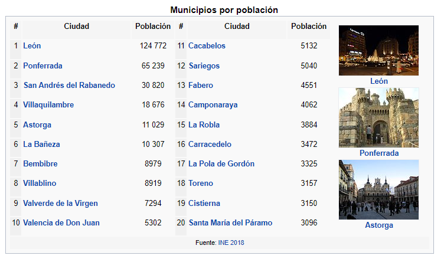Volver al inicio
Localización
La provincia de León se localiza en la parte noroccidental de la península ibérica, en la región histórica de León dentro de la comunidad autónoma de Castilla y León (España). Limita por el norte con el principado de Asturias y con Cantabria, donde la cordillera Cantábrica juega el papel de frontera natural entre la meseta Norte y la costa cantábrica. Por el oeste, son distintas unidades del macizo Galaico-Leonés quienes ejercen de frontera con las provincias gallegas de Orense y Lugo. Al sur limita con las provincias de Zamora y Valladolid y al este con la provincia de Palencia, sin que exista una frontera natural entre ellas.
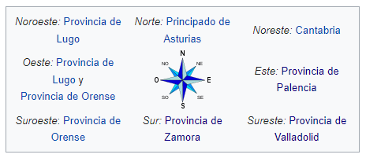 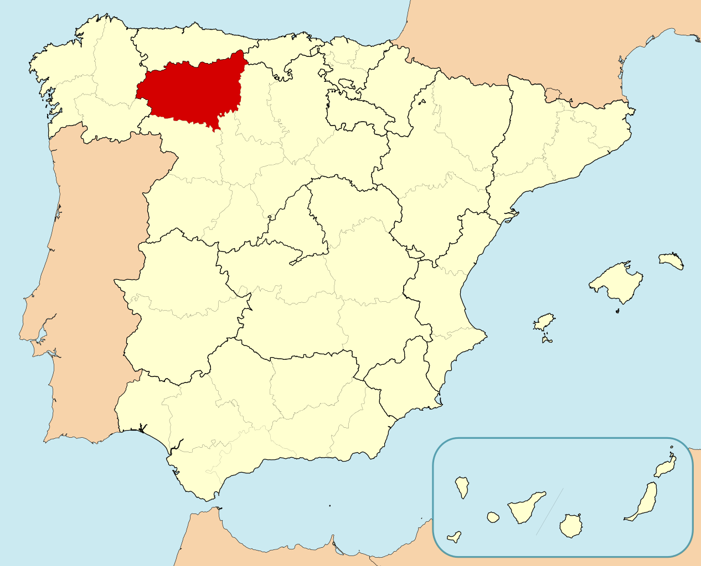Volver al inicio
Naturaleza
Desde que en 1991 la Junta de Castilla y León se adscribió al marco legal que permitía la protección y regulación de sus espacios naturales, se ha ido configurando una red que, a fecha de 2010, integra cerca de cuarenta espacios bajo distintas figuras de protección. De todos ellos, la provincia de León alberga ocho espacios entre los que destacan el parque nacional de Picos de Europa, creado en 1995 a partir de la ampliación del parque nacional de la Montaña de Covadonga, y el Parque Regional de Picos de Europa, creado en 1994.

En cuanto a Espacios Naturales están la Sierra de Ancares, ejemplo de convivencia de influencias gallegas, leonesas y cantábricas, Las Médulas, con su característico modelado antrópico fruto de la minería romana, el Valle de San Emiliano, ejemplo de zona de transición entre la flora y fauna eurosiberiana y la mediterránea, y las Hoces de Vegacervera, de alto valor geomorfológico. Por último, los monumentos naturales del lago de La Baña y del lago de Truchillas, que destacan por sus valores botánico, faunístico y geomorfológico pero que en la actualidad se encuentran amenazados por la presencia de explotaciones mineras a cielo abierto.
 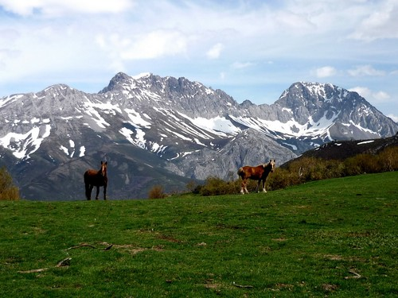
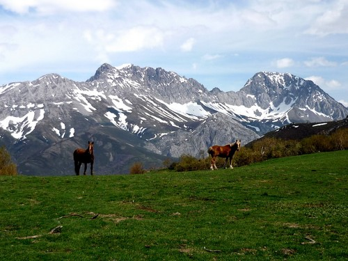
Las áreas catalogadas como Reserva de la biosfera, reconocidas por la Unesco por su interés científico y su riqueza natural y cultural, están representadas en León por siete espacios que ocupan un total de 3 290,253 km² (un 21,12% del total de la superficie provincial).
Volver al inicio
Tradiciones
Pendones leoneses
Los pendones son grandes enseñas compuestas por una vara o mástil, que puede medir entre 3 y 14 metros, y una tela de seda adamascada en franjas que combinan varios colores. El peso de todo el conjunto oscila entre los 15 y los 35 kilogramos y para ayudar a su desplazamiento dispone de los llamados "remos", cordones que se fijan a lo alto de la vara. Los colores más usuales son el carmesí (en relación con el reino de León), el verde (quizás relacionado con la Reconquista, pues es el color del Islam), el blanco y el azul (ambos vinculados a devociones marianas).
Actualmente, los pendones siguen siendo insignias de los concejos (juntas vecinales) pero en muchas ocasiones ligados con las parroquias, saliendo a la calle en procesiones religiosas y romerías. Asimismo, a través de la asociación Pendones del Reino de León, y apoyadas por diversas instituciones como la Diputación Provincial y los ayuntamientos, las concentraciones de pendones han alcanzado un gran auge, como la celebrada en la capital provincial el 27 de julio de 2010 en la que se batió el récord mundial de concentración de estandartes, con un total de 143.
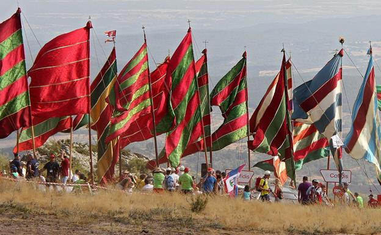Ramo leonés
El ramo leonés de Navidad es un elemento decorativo, utilizado durante las fiestas navideñas en distintos lugares de la provincia, que se ofrecía a la Virgen María durante la misa de Gallo. Sus orígenes parecen remontarse a la época precristiana, en la que tenía un carácter votivo, siendo, por tanto, un símbolo pagano asimilado por la Iglesia desde la Edad Media. Del ramo natural evolucionó a una estructura de madera, y de las iglesias pasó a usarse en los hogares, de modo similar al árbol de Navidad. Con la despoblación del ámbito rural acaecida durante el siglo XX, la tradición estuvo cerca de perderse, ayudado por el empuje de otras tradiciones como el citado árbol, pero en los últimos años vive un renacer, especialmente en la capital provincial.
El ramo consiste en un soporte de madera con una estructura en la que se colocan doce velas y de la que cuelgan distintas ofrendas como cintas bordadas, lazos, hilos de lana, puntillas, rosquillas o frutas. Los tipos de ramo son variados pero, en general, se puede hablar de cuatro especialmente; el triangular (característico de la Ribera y el Páramo), el redondo (abundante en Omaña), el ovalado o en forma de cola de pavo real, y el llamado "rastro", similar al apero agrícola.
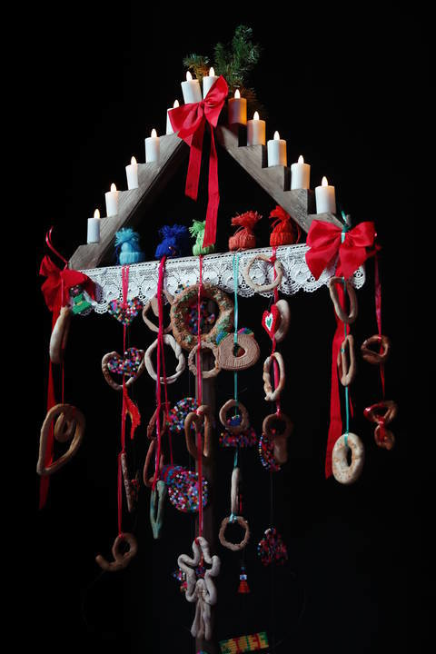Volver al inicio
Otros
Gastronomía
La provincia de León cuenta con numerosos productos tradicionales derivados de la actividad agrícola y ganadera, caracterizándose todos ellos por su calidad y elaboración artesanal, estando muchos de ellos protegidos. La configuración geográfica y climática del territorio permite una amplia variedad de alimentos como frutas, vinos, quesos, productos de huerta, embutidos y legumbres, entre otros.
Entre los platos cocinados destacan la sopa de trucha, la morcilla y el característico cocido maragato, cuya principal peculiaridad es que se come al revés, empezando por las carnes para terminar con la sopa. En cuanto a la panadería y repostería, destacan las mantecadas de Astorga, os hojaldres de Astorga, los lazos de San Guillermo de Cistierna, los imperiales de La Bañeza y los nicanores de Boñar. Entre los vinos sobresalen las denominaciones de origen de Bierzo y Tierra de León.
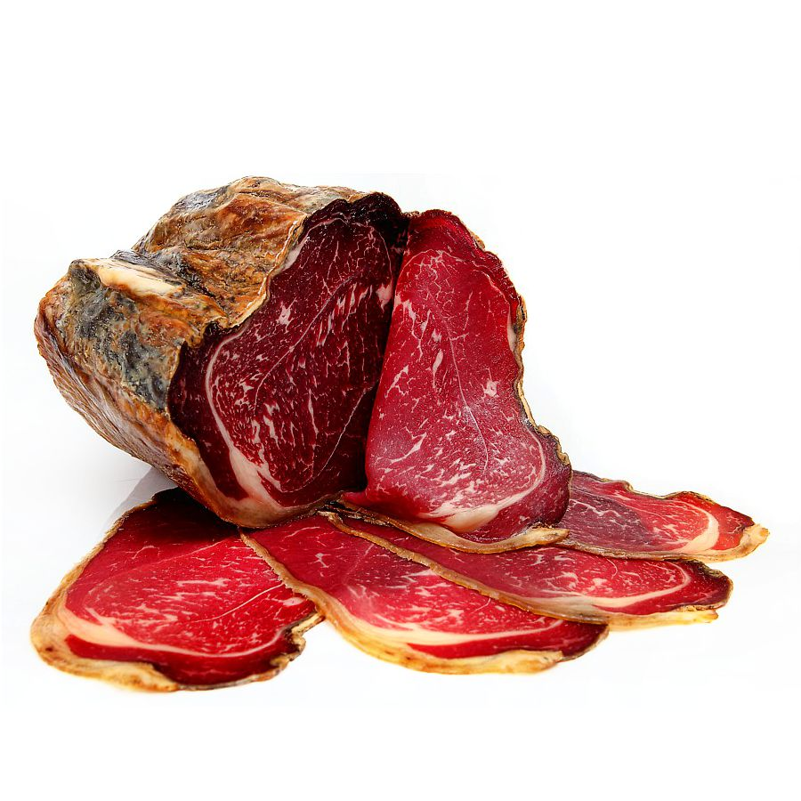Demografía
La demografía de León contiene las bases del estudio sobre la población leonesa en distintos campos, como puede ser la cuantificación demográfica y la cualitativa, es decir las cualidades en su estado laboral, su renta, su edad, etc. León tiene una población de 499.284 habitantes al 1 de enero de 2010, según el Instituto Nacional de Estadística (INE). Se trata de la 32.º provincia más poblada de España; siendo su densidad de población (32,04 hab/km² según INE 2008) menor que la media nacional (93,17 hab/km²).
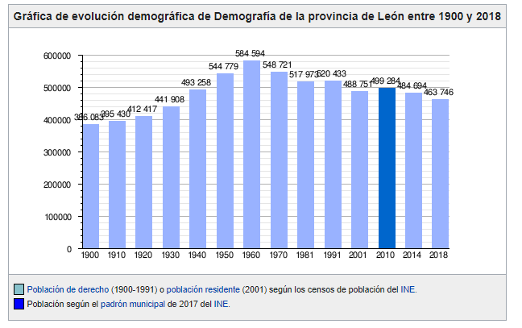Volver al inicio